Setting up Azure API Management with Dynamics 365 in 30 minutes
Dynamics 365 comes with a robust and powerful REST API out of the box. However, when integrating with other parties, I prefer to use Azure API Management (APIM) as an intermediary for a multitude of reasons.
The setup used to be somewhat convoluted, but is now much simpler. This post will walk you through the steps needed for setting it up manually, while a later post will detail how to automate it though a DevOps pipeline.
1. Create the API Management service
The first step is to install the API Management gateway, so head over to the Azure portal and create a new API Management service.
There aren’t many options that needs to be configured, but make sure to enable System assigned managed identity as it will be used to connect to the Dynamics 365 instance.
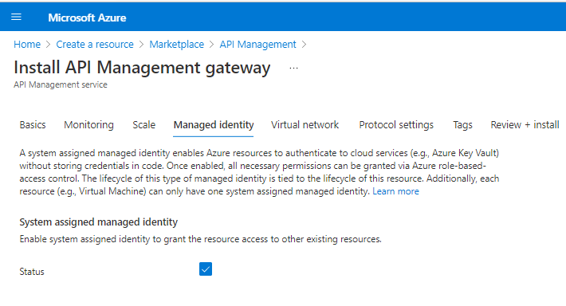
2. Create an app user
The next step is to create an app user for the managed identity, in the environment it should have access to.
First we need the Object ID for the Managed Identity. This can be found on Security -> Managed identities -> System assigned:
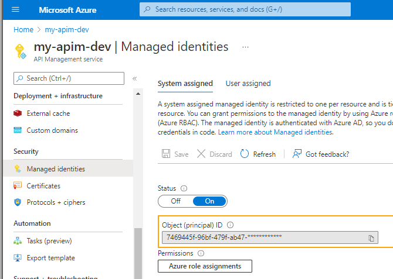
Then go to Azure Active Directory -> Enterprise Applications and search for this Object ID to find the Application ID: 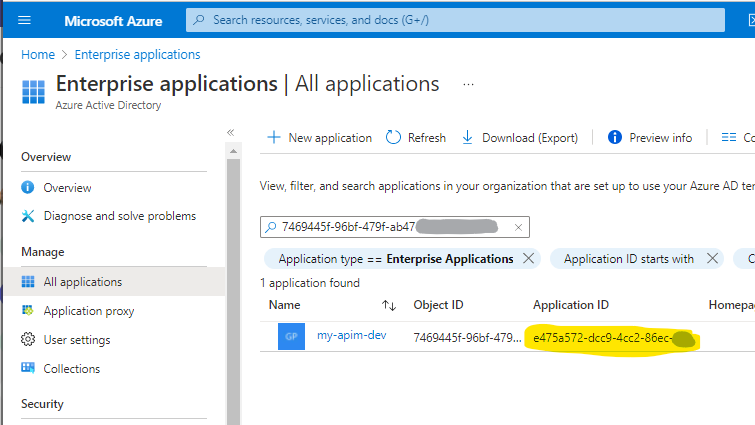
Head over to the Power Platform admin center, open the environment which APIM should get access to, and click S2s Apps -> See all: 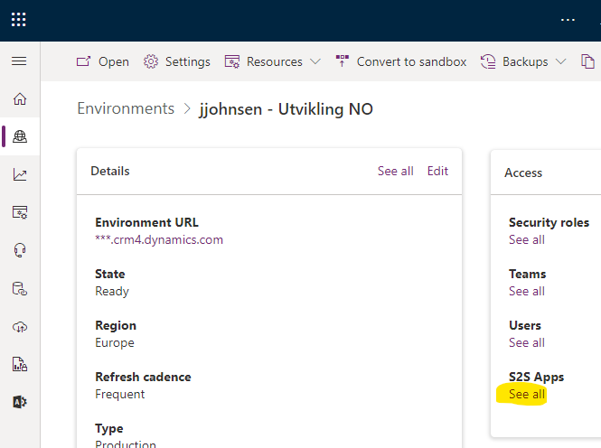
Click New app user: 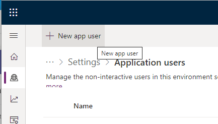
In the Create a new app user dialog, Click Add an app and search for the Application ID, select to app and click Add: 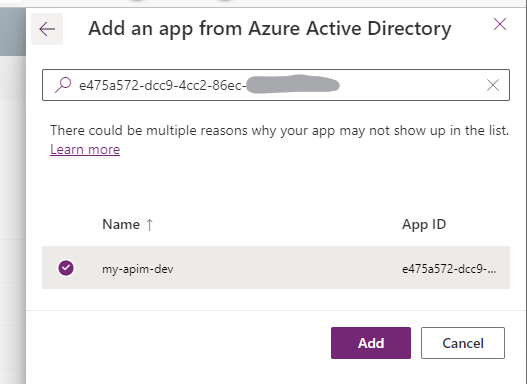
Select a Business unit, add Security roles and click Create: 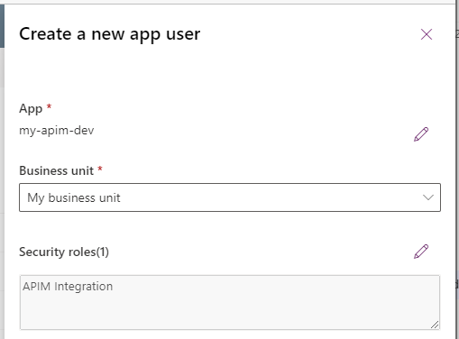
I recommend creating a separate security role for APIM, but that is outside the scope of this post.
3. Creating an API and operation
To test the connection we need to create a new API with an operation that calls the Dynamics 365 REST API.
Open the API Management service from the Azure portal, select: APIs -> Add API -> HTTP: 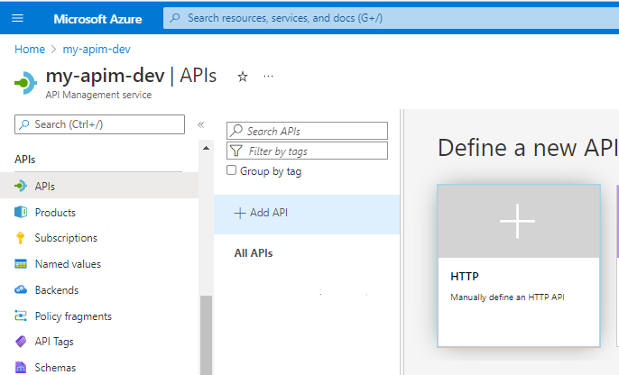
Select Full, Give the API a Display name (and name) and set the Web service URL to the REST API url of your dynamics instance: 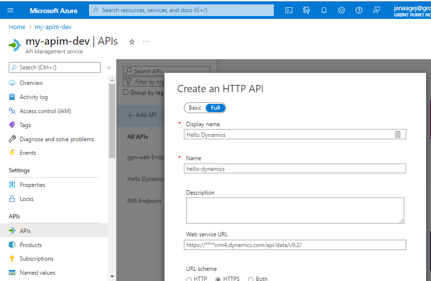
From the API click Add an operation and fill in the Display name, name and URL and click Save. The existing WhoAmI function is used as example here:
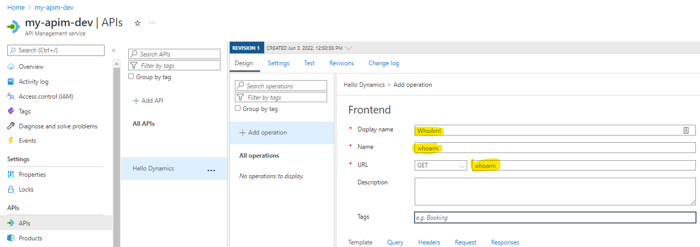 Note: the URL is case sensitive.
The final step is now to tell APIM to authenticate with its managed identity.
Open the Policy editor for the WhoAmI operation: 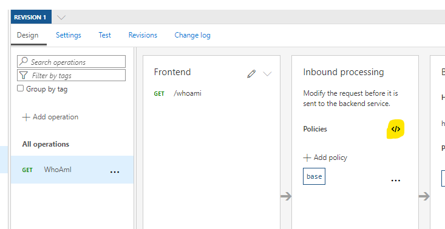
Add a authentication-managed-identity policy to the inbound section with the resource attribute set to URI of you dynamics instance and save: 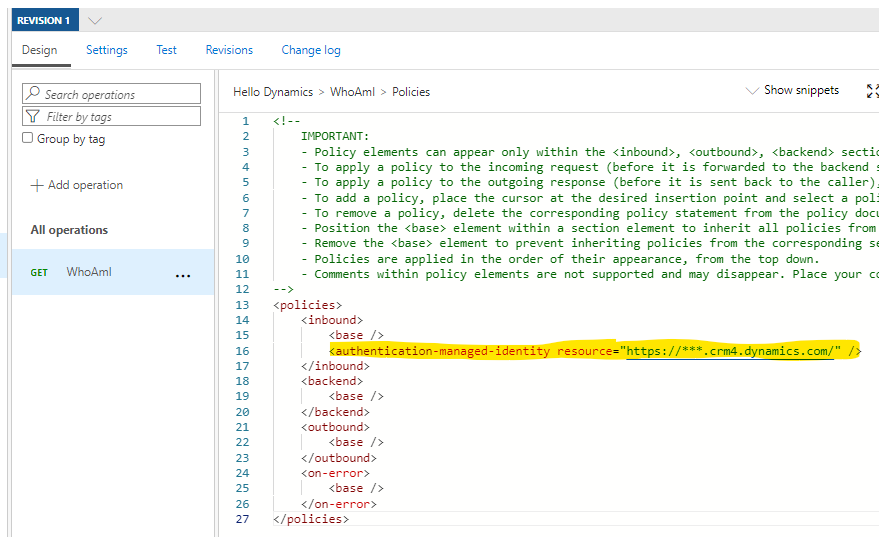
4. Testing the API Endpoint operation
You should now be able to test the WhoAmI operation using the Test section: 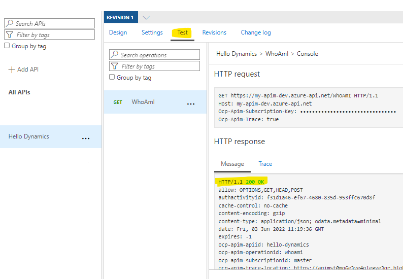
Assuming everything went according to the plan, you should receive a 200 OK response, and be ready to crank out your own API! 🥳